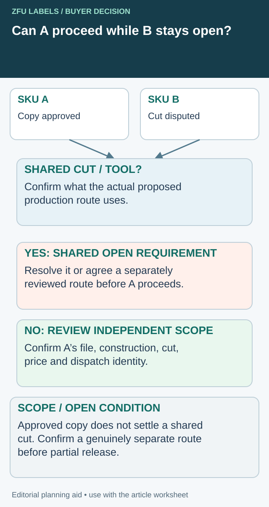

The purchase order requests a matte label, the proof notes a gloss finish and the drawing contains an earlier cut size. Each document looks official. Approving only the newest attachment leaves the printer to decide which conflicting instruction describes the job.
Reconcile the disputed fields before releasing production. Identify the intended requirement, the document that must be corrected and the person authorized to resolve it. Do not rely on an informal assumption that the proof always overrides the order or that the order always overrides the drawing.

Check whether the proposed partial release is genuinely separable
Correcting one SKU can make a limited release sensible, but only if the unresolved requirement does not also control its production. Add a dependency gate beside the field-reconciliation matrix. It answers a narrower question than document precedence: can the ready component proceed without inheriting the disputed instruction?


List the proposed released components and trace their actual dependencies. A shared cutting tool, common construction instruction or linked artwork block can connect apparently separate job lines. A shared supplier name alone is not such a dependency. Ask the converter which resources the proposed production route actually uses.
| Dependency | Evidence to check | Partial-release consequence |
|---|---|---|
| Cut/tool revision | Accepted footprint and tool used by each component | A disputed shared cut may keep both components open |
| Construction instruction | Exact reference attached to each job | An isolated wording error may be corrected without changing another accepted item |
| Production authority | File IDs and any shared linked block | Confirm the released output does not pull disputed content |
| Commercial allocation | Quantity, grouping and confirmed offer | Separate production may change price or timing; obtain the actual proposal |
| Dispatch identity | Distinguishable released stock and held balance | Warehouse can enforce the same boundary as the release |
Follow the shared-tool branch
In an illustrative two-flavor order, A's copy is approved while B's required cut remains disputed. If both were planned on a tool whose revision is also unsettled, approving A's copy does not close A's geometry. Either resolve the common cut, obtain a separately agreed production route for A, or keep that production open. No press or scheduling change is authorized by this worksheet.
In another configuration, the dispute concerns only B's independent back-panel wording. A may be separable if its accepted file, construction, cut and commercial basis are independently identified. Record the reviewed dependency result rather than issue a vague message saying everything except B is fine.
Ask the supplier to acknowledge the exact released set and the held set. Confirm any consequent setup, grouping or delivery change before purchasing treats the earlier total price and date as unchanged. A limited release can protect a packing slot, but the extra administration is useful only when production and receiving can maintain that limit.
This is an operational coordination gate. It does not determine contractual priority, waive unresolved requirements or replace the responsible technical and commercial approvals.
Identify the conflict at field level
List the documents the parties actually use: quotation, purchase order, order confirmation, cut drawing, artwork file, proof and any material specification. Record their identifiers and revisions. A date can help locate a file, but a newer date does not automatically establish authority for every subject.
Compare the fields that affect the deliverable. Dimensions, construction, finish, quantity per artwork, roll format and delivery conditions can be distributed across several records. State the actual disagreement rather than send a general request to check everything again.
The quote-baseline guide establishes a shared priced job. This reconciliation addresses the next problem: the documents that should describe that job now contain incompatible instructions.
Assign the decision to the right owner
A designer may confirm artwork placement but cannot necessarily authorize a material change. A purchasing coordinator may confirm quantity without approving mandatory wording. Identify the owner of the disputed requirement and the person who gathers the resulting release record.
Where the disagreement concerns contractual document priority, obtain the responsible commercial or legal review of the actual agreement. This article does not determine which document legally prevails. The operational goal is to remove the ambiguity before anyone has to rely on a dispute about precedence.
Do not ask a press operator to choose the most plausible requirement from conflicting attachments. The buyer and supplier should agree what will be produced and issue consistent instructions through their authorized channels.
Use a field-reconciliation matrix
| Field | Conflicting references | Authorized requirement | Correction and confirmation |
|---|---|---|---|
| Cut size | Drawing A versus PO description | Named approved dimensions | Revised drawing/order reference |
| Construction | Quote stock versus order stock | Exact accepted proposal | Supplier confirmation and applicable review |
| Finish | Proof note versus material schedule | Agreed physical effect | Updated file/specification and approval scope |
| Artwork | File name versus proof revision | Exact production authority | Superseded file clearly identified |
| Quantity | PO total versus SKU schedule | Accepted allocation and unit | Corrected commercial record |
| Roll format | Machine sheet versus confirmation | Station-specific interface | Accepted roll drawing |
| Delivery | Requested versus confirmed event | Actual agreed milestone | Written schedule clarification |
The examples name types of conflict, not acceptable default values. Replace them with the actual records. Keep each unresolved line open until an authorized requirement and corresponding correction are confirmed.
Correct the records the production team will use
An email explanation can help resolve the question, but it may not update the drawing or job system beside the press. Ask which records must change and who issues them. Keep the corrected references together so the final release does not require reconstructing a long message thread.
If the supplier's order confirmation is corrected, check the changed line and any other affected field. Do not assume that a correction to size leaves price, tooling or roll distribution untouched. Ask the supplier to identify consequential changes explicitly.
The artwork handoff guide identifies the production file and supporting assets. Use the same discipline to separate a current authority from a historical explanation or a nonproduction mockup.
Review linked effects without expanding the dispute unnecessarily
A changed cut can affect artwork clearance. A changed stock can affect appearance and applicable material evidence. A changed quantity can affect the delivery allocation. Ask the relevant owner which approvals reopen rather than treating every discrepancy as either harmless or a complete restart.
For a hypothetical ginger-tonic order, a proof might correctly show the brand but carry an outdated finish note copied from a previous job. Resolving that note may leave the approved copy intact while requiring the physical finish specification to be corrected. That is an illustrative decision path, not an assertion that such notes are always administrative.
The proof-scope record helps preserve which decisions remain valid. A new consistent document set still needs the relevant approvals; consistency alone does not establish physical suitability.
Make a bounded release instruction
List the accepted document set, the order and components covered, and any excluded or pending work. If only one SKU is ready, say so. Do not release an entire range because one disputed dimension has been corrected.
Ask the supplier to confirm receipt and use of the reconciled set. Receiving files and authorizing production are distinct events. The release should identify who is permitted to proceed and what evidence closes the remaining conditions.
Retain earlier versions as history while preventing them from being picked as current. Avoid deleting the evidence that explains why a price, tool or schedule changed. An accessible change log can resolve the next question without reviving the old conflict.
Check the first output against the agreed set
At the appropriate proof, sample or receiving stage, verify the resolved fields using the relevant method. A correct carton mark can confirm identity without proving every physical property. Keep the actual inspection scope visible.
When a later revision arrives, repeat the field check for the affected documents. The purpose is a stable production instruction, not a permanent ban on change. A controlled amendment can be simple when every party knows which field changed and which record now governs the operation.
Resolve the specific label handoff
Include conflicting fields, proposed released components and any shared tooling/material/file dependencies.
Prepare the label specification inquiry. The form opens an email draft for your review; attachments go through the listed email or WhatsApp route. Actual supply scope, pricing, samples and timing need project confirmation.
Related decisions: Label Material Substitution: Approve the Change Before the Repeat Run; Label Artwork Handoff: Identify the Production File and Its Dependencies; Multi-SKU Labels: Trace a Shared Copy Change to Every Affected File